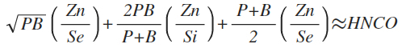

Part 1
Part 1
If we are to guess there is dynamic structure in AI we have to to understand the golden ratio, because it should be there. The best way to understand it is to derive it.
As well we need to look at the means geometric, arithmetic and harmonic:
We guess the core AI element silicon (Si) doped with phosphorus (P) and boron (B) has the golden ratio conjugate (phi) in its means geometric arithmetic, and harmonic:
Which it does
We find the ratio between the biological elements C, N, O, H are in the golden ratio conjugate as well:
This allows us to establish the connection between AI and biological life:
Which can be written:
Writing in the arithmetic mean
Which is nice because
Where
Where ZnSe is zinc selenide and intrinsic semi conductor used in AI and germanium (Ge) is the other core AI semiconductor and As is arsenic one of its doping agents and Ga is gallium one of its doping agents.

A similar thing can be done with Ge, Ga, and As, this time using CHNOPS the most abundant biological elements by mass.
The factor by which our original equation has near perfect equality is in the primordial precursors to amino acids, the building blocks of life, which are H2O, CH4, and NH3, water methane, and ammonia:
We find there is an equivalence to the precursors of the biological life and of AI, in that tungsten, W, is the filament of the first crude AI for making switches by housing in silicon dioxide, SiO2, or glass for vacuum tubes: